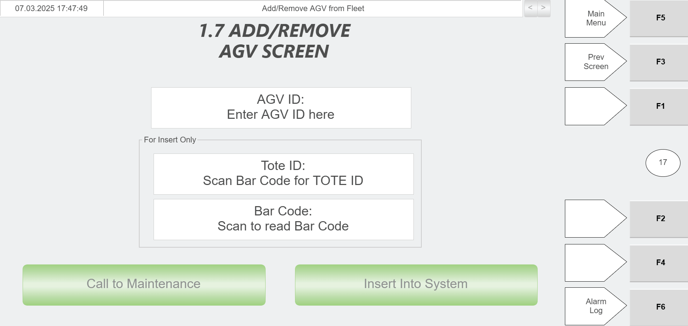

| Procedure ID | proc_recover_agv_after_lost_tote_no_fault_using_rms_and_hospital_hmi_v1 |
|---|---|
| Title | Recover an AGV After It Loses a Tote (No Fault) Using RMS and Hospital HMI |
| Procedure Type | recovery |
| Primary Role | operator |
| Support Safe | Yes |
| Capability Tags | agv_active_errors, agv_physical_recovery |
| Access Surface | rms_ui, hospital_hmi, physical_floor |
| Audience Roles | operator |
| Failure Pattern Tags | None |
| Validation Status | needs_sme_review |
| Merge Status | source_finalized |
Recover from the “AGV LOST TOTE NO FAULT” condition by stopping RMS, physically moving the AGV to the Hospital, removing and re-adding the AGV via the Hospital station PC/HMI workflow, power-cycling the AGV, re-localizing it by rolling over the Inbound Hospital Station QR code, then locating/removing the missing tote and adding it back into the system so the AGV can return the tote to the sorter.
Use when an AGV has lost a tote but is in the “AGV LOST TOTE NO FAULT” recovery scenario, and you need to remove/re-add the AGV and re-localize it at the Inbound Hospital Station so the missing tote can be removed and reintroduced for normal sorter flow.



Responsible role: operator
Instruction:
On the RMS / fleet status UI (rms_ui), perform the RMS E-stop action.
Expected result:
RMS is in an E-stopped state (E-stop control/status reflects the stopped condition on the RMS UI).
Responsible role: operator
Instruction:
On the AGV that lost a tote, press the brake release.
Expected result:
The AGV brake is released, allowing the AGV to be pushed.
Responsible role: operator
Instruction:
Push the AGV over to the Hospital.
Expected result:
The AGV is physically positioned at the Hospital station area for the next remove/add step.
Responsible role: operator
Instruction:
At the Hospital station PC, remove the AGV from the system, then add the AGV back into the system using the Hospital station PC workflow/HMI.
Expected result:
The AGV is removed and then inserted back into the system via the Hospital station PC/HMI workflow.
Responsible role: operator
Instruction:
Turn the AGV off, then turn it on again.
Expected result:
AGV has been turned off and then back on.
Responsible role: operator
Instruction:
Wait for the AGV lights to turn green.
Expected result:
AGV lights are green.
Stop or Escalate If:
Responsible role: operator
Instruction:
Roll the AGV over the QR code in front of the Inbound Hospital Station.
Expected result:
AGV has been rolled over the Inbound Hospital Station QR code after lights turned green.
Stop or Escalate If:
Responsible role: operator
Instruction:
Locate the missing tote and bring it to the Hospital to remove it from the system.
Expected result:
The missing tote is located and removed from the system via the Hospital station workflow.
Stop or Escalate If:
Responsible role: operator
Instruction:
Add the tote back into the system using the Hospital station PC workflow/HMI.
Expected result:
The tote is added back into the system via the Hospital station workflow.
Stop or Escalate If: